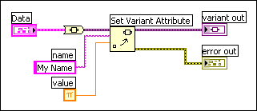

Adding Attributes to Variant Data
Complete the following steps to add attributes to variant data.
- Add the Set Variant Attribute function to the block diagram.
 Add
Add  Find
Find
- Wire the variant data to the variant input of the Set Variant Attribute function.
- Wire the name and value inputs of the Set Variant Attribute function.
- Wire the variant out output of the Set Variant Attribute function to any VI or function that accepts variant data as an input.
- Run the VI. The block diagram should appear similar to the following block diagram.
